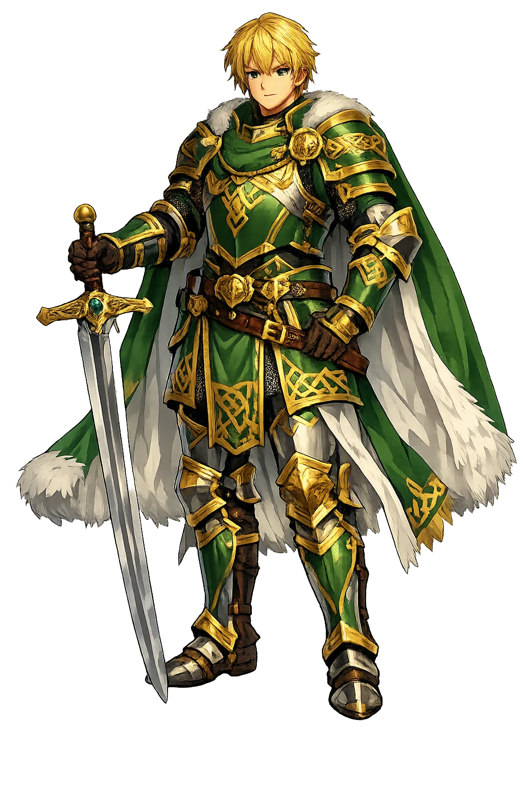
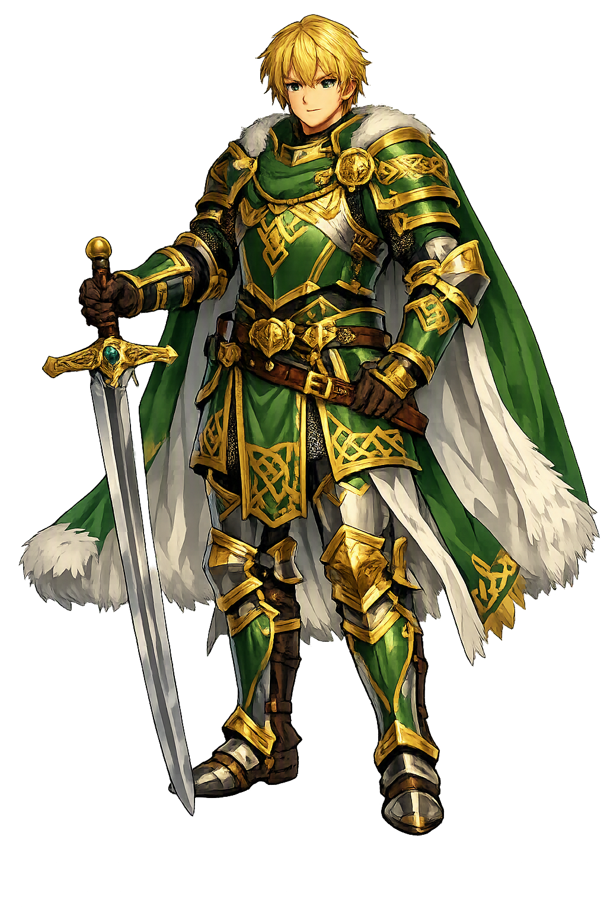

Unicode restoration and ASCII comparison
Gawain
The name survives in scholarly transliteration. Gawain is the standard Celtic romanisation, documented in academic sources — “Little falcon”. Because the spelling uses only Latin letters, the form is the same in both ASCII and Unicode.
No indigenous writing system is securely attested for individual celtic names. The form shown is a modern scholarly transliteration.
gawain
The plain gawain form is identical to the Unicode restoration. Because this name is already written in Latin letters, no diacritics, stress, or script information were lost — only capitalization differs.
Gawain
The Unicode restoration does not need to recover lost marks for Gawain. Its value is canonical spelling and consistent cataloguing, not the reconstruction of erased orthography. The domain is readable as-is to both DNS and humanity.
Gawain.com → gawain.com
The non-ASCII characters in Gawain are encoded while the ASCII remains visible. To the DNS, it is Punycode. To humanity, it is Gawain.
How Gawain is preserved in writing
No indigenous writing system is securely attested for individual celtic names. The form shown is a modern scholarly transliteration.
Contribute scholarly provenance →Owned, ideal, and ASCII forms of Gawain
Gawain
The full Unicode restoration. gawain.com is not in the PuniCodex collection — it is watched for release; if it drops, this temple upgrades to an owned flagship.
How Gawain was spoken
The Hawk of May, the Quest Completed, and the Girdle of the Green Chapel
Gawain — Welsh Gwalchmai, Arthur's nephew — is the courteous knight of the Welsh and continental cycles: the one who never came home without the quest he went to seek, the measure against whom Chrétien ranks every other knight of the Round Table, and the man the Green Knight chose to test, at the turning of a year, for the one virtue the pentangle guards — truth.
Gwalch + Mai: the name itself is a raptor and a season — the spring hawk of the Welsh court.
The five-pointed star Solomon set on Gawain's shield in the Green Knight poem — five fives, and truth at the center of them all.
The lace of silk and gold kept back from the exchange — worn home as the 'token of untruth' the court turned into a badge of honor.
Gawain's horse from Chrétien onward — the mount that carries him, in the Green Knight poem, through the winter forest to the Green Chapel.
Stories of Gawain
Gawain's dossier runs from a Welsh triad to a fourteenth-century masterpiece: in every century someone is testing him, and the test is always the same — not whether he can fight, but whether he will keep faith.
The oldest Arthurian tale in Welsh names him in its great muster at Arthur's court: Gwalchmei mab Gwyar — Gwalchmai son of Gwyar — 'because he never returned home without achieving the quest he had gone to seek; he was the best of walkers and the best of riders; he was nephew to Arthur, the son of his sister, and his first cousin.' In a catalogue of hundreds of warriors, giants, and wonders, that is the whole of his entry, and it is the whole of his character: the Welsh tradition remembers him not for a single exploit but for completion itself — the errand that always comes home.
The Welsh Triads — the medieval memory-system that files the Island of Britain's heroes in threes — name Gwalchmai son of Gwyar among the Three Well-Endowed Men of the Island of Britain, beside Llacheu son of Arthur and Rhiwallawn Broom-Hair (Triad 4). Rachel Bromwich's edition of the Triads is also the standard witness for his name: Gwalchmai, gwalch 'hawk' + Mai 'May', the 'hawk of May' — a name that stands in Welsh before any French romance ever sang of Gauvain.
Geoffrey of Monmouth's Historia (c. 1136) made him Latin and sent him across Europe: Walganus, son of Loth of Lodonesia and Arthur's sister Anna, given as a boy to the service of Pope Sulpicius in Rome, recalled to Britain to be knighted, and made the steel edge of Arthur's Roman campaign — the knight who cuts through the emperor's host and slays the nephew of Lucius. When Mordred's treason calls the army home, Walganus falls at the landing, in the first fighting on the shore, and is buried as the chronicle says. A generation earlier, William of Malmesbury had already written him down as Walwen — and reported his tomb, found at Rhos in Pembrokeshire, fourteen feet long.
In the romances of Chrétien (c. 1160–1190), Gauvain is not the hero of any single quest but the standard against which all the heroes are measured: Erec et Enide ranks him first of the knights of the Round Table, and through Cligés, Lancelot, Yvain, and the Conte du Graal he moves as the court's fixed point — courteous without effort, brave without boasting, the knight whose speech is as ready as his sword. Chrétien lets Perceval's innocence test him and the world test them both; the Continuators of the Perceval give him stranger gifts — a strength that doubles as the sun climbs to noon and fails as it falls — the trace that later scholarship would read as the memory of a solar hero.
At Camelot's New Year feast a giant all in green rides into the hall and offers a Christmas game: any knight may take one stroke at his neck with the great axe, on condition of receiving one in return, a year and a day hence, at the Green Chapel. Gawain takes the challenge and strikes the head clean off; the Green Knight picks it up, reminds him of the tryst, and rides out holding it. The year turns, and Gawain rides north through winter to keep his side of the bargain.
At Hautdesert the lord Bertilak proposes an exchange: each evening they will swap whatever the day has won them. Three days the lord hunts; three days his lady tests Gawain's courtesy in his chamber; and each evening Gawain faithfully renders the kisses he has received — but on the third day he keeps back the green girdle the lady says will preserve his life. At the Green Chapel the axe falls three times: twice withheld, and once, for the kept-back girdle, a nick in the neck. The Green Knight reveals himself as Bertilak, sent by Morgan le Fay; the girdle was the whole point. Gawain wears it home as his 'token of untruth' — and Camelot laughs, and binds a green lace on every shoulder in his honor.
Malory's Sir Gawaine is the courteous knight grown tragic: head of the Orkney clan, Arthur's dearest nephew, whose feud with Lancelot — after Gareth and Gaheris are slain in the fire of Guenevere's rescue — drags the fellowship to ruin. Wounded at Dover by Lancelot in the last single combat, he dies of the reopened wound, writing with his own hand the letter that calls Lancelot 'flower of all noble knights' and begs him to come see his tomb. And on the eve of Salisbury Plain he returns in Arthur's dream with a troop of ladies, warning the king not to fight Mordred on the morrow — the nephew still trying, from beyond death, to bring his uncle's last errand home.
Gawain is the patron of the errand that must be finished and the word that must be kept — and the Green Knight poem's genius is to show that these are not the same virtue. He finishes everything: the quest, the journey north, the appointment no one would blame him for missing. And still he fails, once, by the width of a green lace — not from cowardice, says the poem, but from love of his own life. The court's answer is the tradition's answer: the failure is not hidden but worn, and what one man wears as his shame the fellowship takes up as its badge. The pentangle on his shield has truth at its center because truth is the one knot that cannot be slipped; everything else — courage, courtesy, purity, fellowship, pity — hangs from it. Gawain asks the question every promise asks: not whether you are brave enough to keep it, but whether you are honest enough to say what it cost.
Enter Extended Lore